SMART Readers Liberia, Inc.


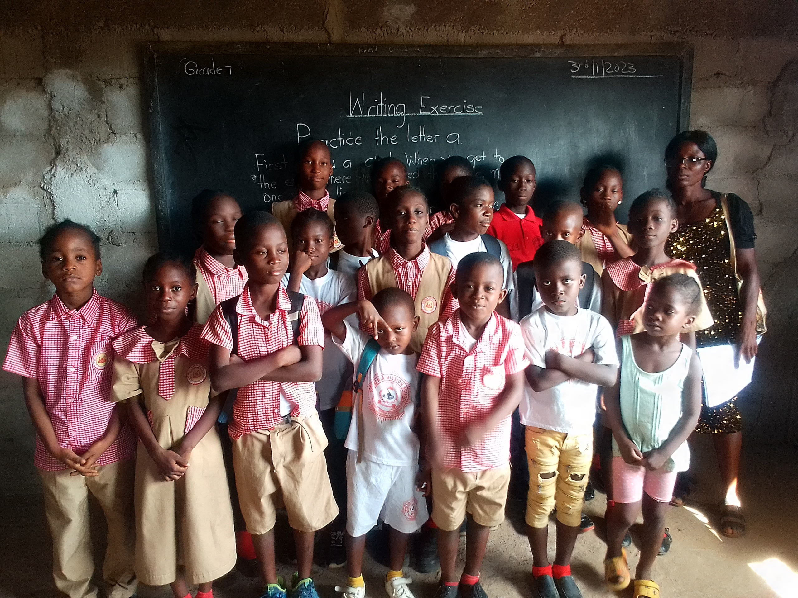
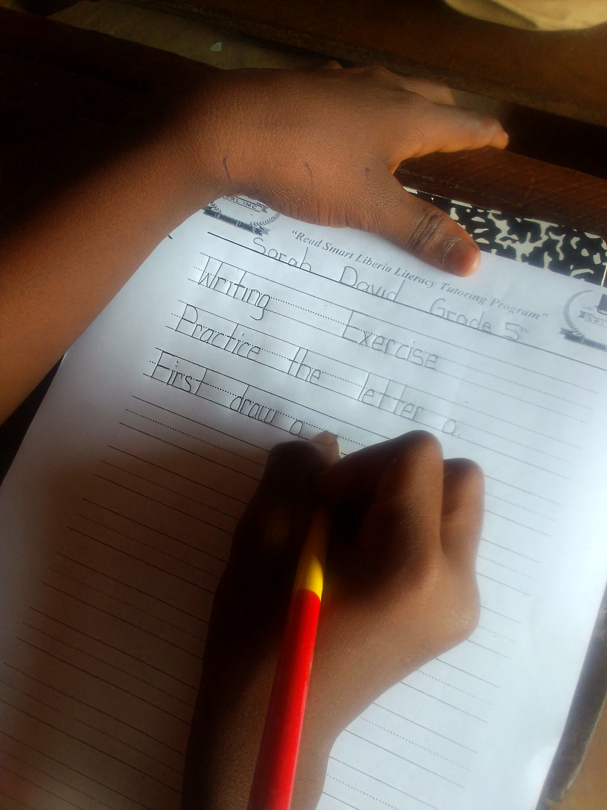
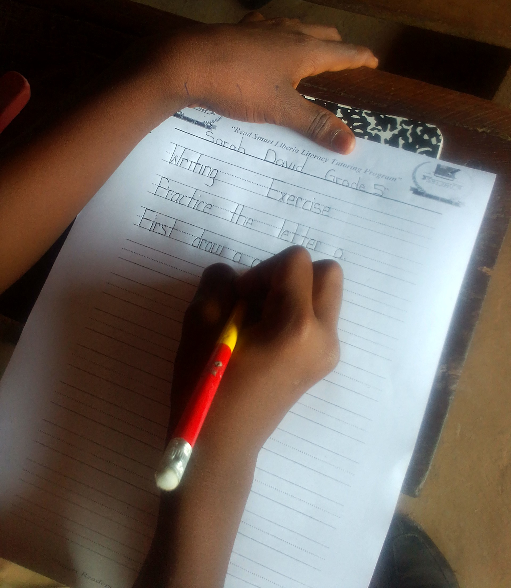
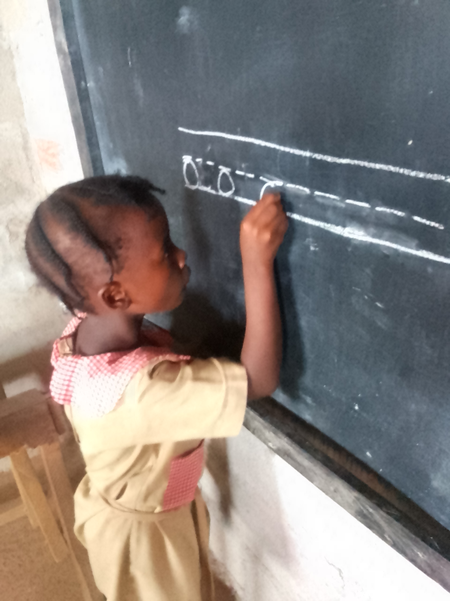
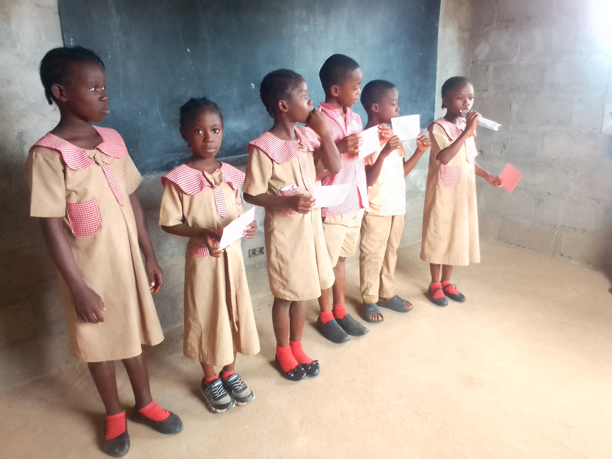
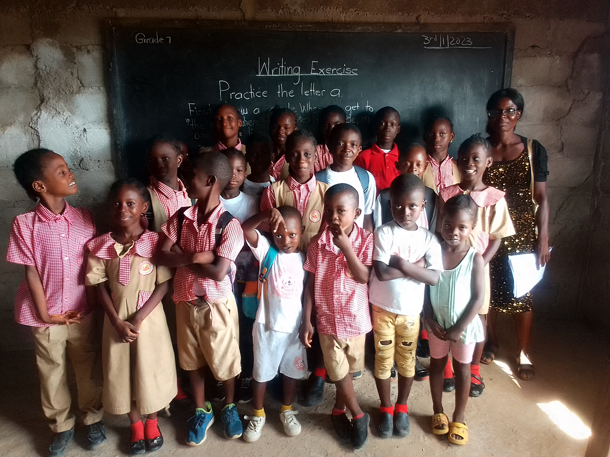
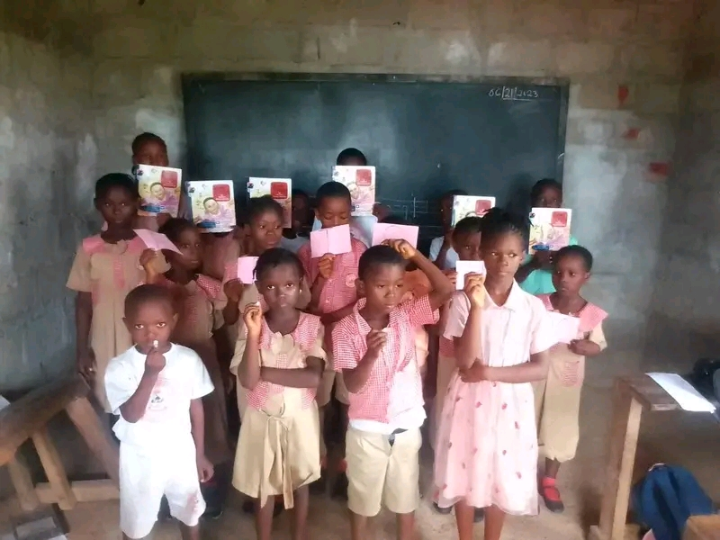
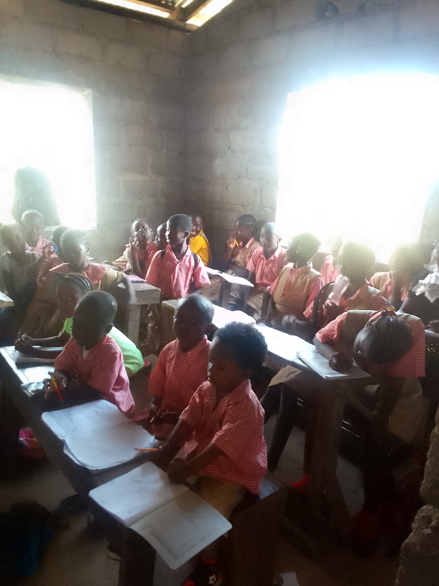
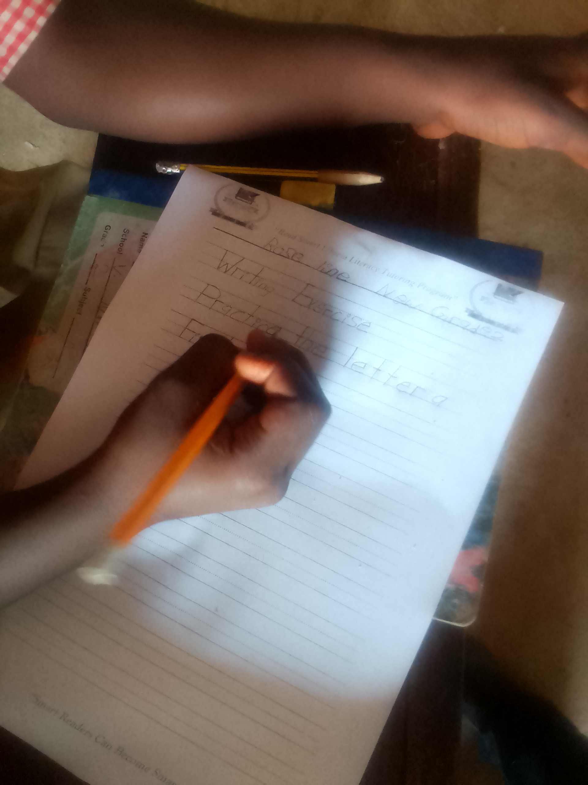
Stay updated with our recent activities, literacy programs, worskshops, community outreach, and success stories from our learners and volunteers.

Even before its official launch, Smart Readers Liberia INC. was already at work. In a clear demonstration that its commitment to literacy was not merely ceremonial but deeply practical, the organization conducted its Initial Teacher Training from August 8 to 10, 2022 — a three-day intensive program that would lay the instructional groundwork for its literacy intervention work in Liberia.
The training, held at its partner institution Versenia Mission School, brought together six (6) teachers who would become the first educators to be equipped with Smart Readers Liberia INC.'s novel and research- informed approaches to teaching children to read Read more.
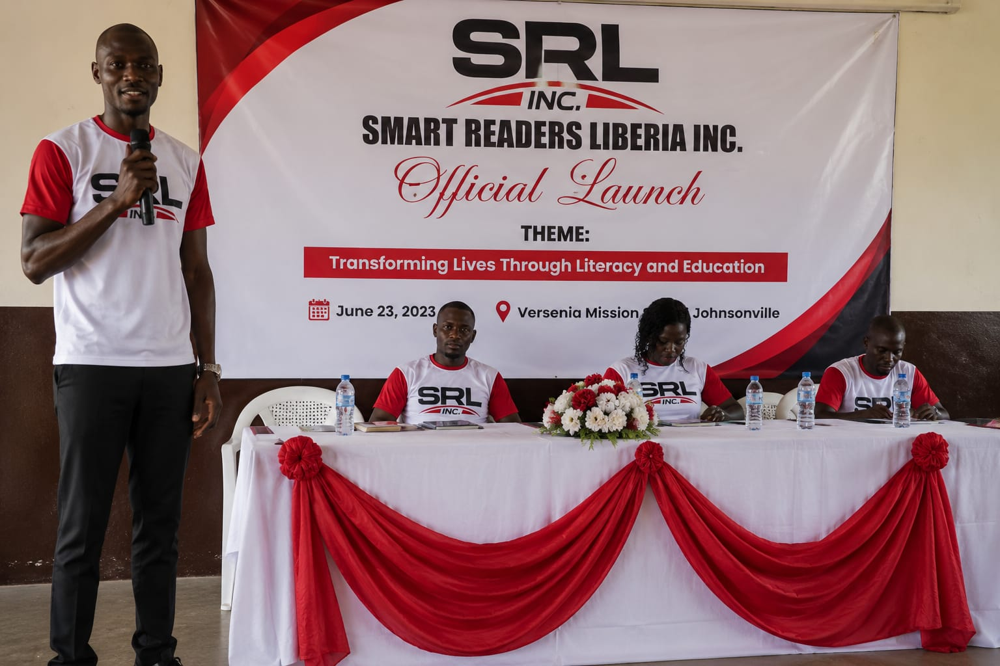
In a landmark moment for literacy and educational advancement in Liberia, Smart Readers Liberia INC. officially launched its operations at the Versenia Mission School Auditorium before an audience of more than 200 educators, community leaders, parents, students, and distinguished guests. The occasion marked not merely the birth of an organization, but the kindling of a flame — one that promises to illuminate the minds of generations to come Read more.
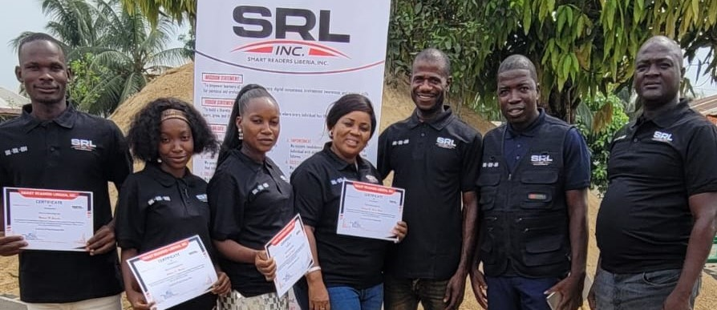
In a continued demonstration of its commitment to structured, purposeful, and impactful literacy work, Smart Readers Liberia INC. hosted its Volunteers' Onboarding Training at the Readers Foundation Institute (RFI) in the New Israel Community, Johnsonville. The training brought together a new cohort of volunteers who would go on to serve as the hands, feet, and voices of the organization's growing literacy mission across Liberia.
The choice of venue was itself a statement of solidarity. That the training took place at the Readers Foundation Institute — the institution founded and led by Mr. Gohnlon S. Kollie, a steadfast ally of Smart Readers Liberia INC. since its very launch — reflected the deep and enduring partnership between the two organizations and their shared devotion to building a reading nation Read more.